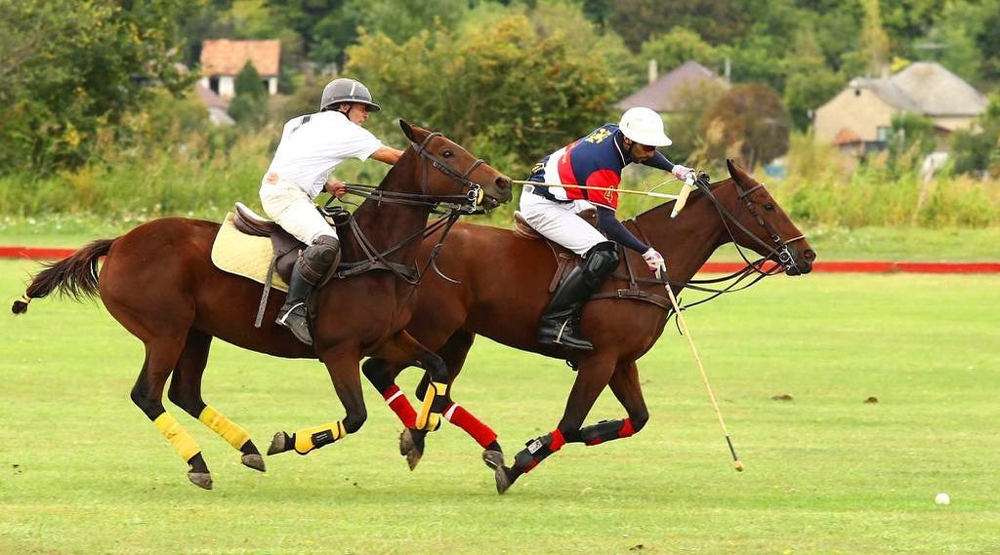
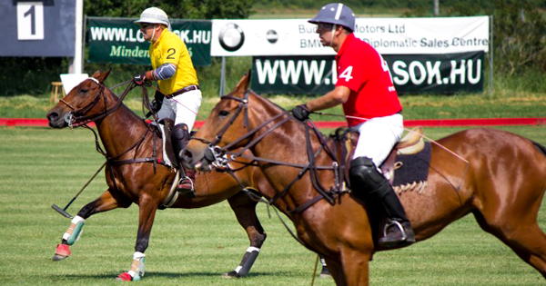

A póló kezdetei, mint minden nagyszerű dologé, az idők homályába vesznek, de az bizonyos, hogy már időszámításunk előtt évszázadokkal játszották Perzsiában, ahonnan elterjedt egész Ázsiaba, főként Tibetbe, Indiába, Kínába és Japánba. A pólót az Indiában állomásozó angol tisztek fedezték fel a modern kor számára 1850 körül. Első klubjukat 1869-ben alakították Angliában. Innen kezdve a póló világszerte hódít, legtöbben Argentínában, az Egyesült Államokban,Nagy Britanniában, Ausztráliában, Mexikóban és Indiában játszák. Európában századunk eleje óta ismert és népszerű, a II. Világháborút megelőzően (pl.: az 1936-os berlini olimpia műsorán is szerepelt, ahol a magyar csapat kitűnő eredményt ért el)egész Európában és Magyarországon is rengetegen űzték. Nyugodtan állíthatjuk, hogy a póló ma világszerte reneszánszát éli.
 